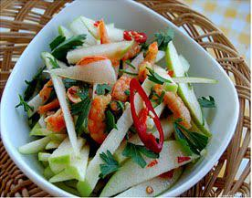

Cùng bắt tay làm thử thôi nào!
Nguyên liệu:
- 3 trái táo xanh
- 1 tép tỏi
- 1/2 hay chơi luôn 1 trái ớt hiễm
- 1 miếng chanh
- 1 tới 1 1/2 muỗng càphê mắm nêm ( tuỳ độ mặn của loại mắm)
- 1/2 muỗng caphe bột ngọt
- 1 trai cà chua
- 2 muỗng cà phê tép khô (loại tôm khô thật nhỏ còn cả vỏ)
- 1/2 bắp cải
Cách làm:
Dùng dao bằm và xắt 2 quả táo xanh thanh sợi trung bình, đừng dùng đồ bào, apple sẽ không dòn . ngâm trong nước có vài giọt chanh cho sợi apple không đỗi màu. Giã nát tỏi và ớt và tép khô,rồi trộn vào: Cà chua sắt sợi, mắm nên, chanh, bột ngọt, trộn đều.
Bắp cải xắt hình tam giác như corn chip, rồi dùng mà xúc gỏi như xúc bánh tráng!